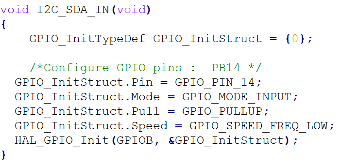

使用stm32CubeMX和keil实现GPIO模拟IIC协议，在CubeMX中需要先将GPIO13和GPIO14设置为OUTPUT模式。

函数设置IIC的SDA总线为INPUT模式。

函数设置IIC的SDA总线为推挽输出模式。

读取IIC的SDA状态。

设置IIC的SCL总线为推挽输出模式。


宏IIC_SCL_H,IIC_SCL_L分别在推挽输出模式下设置IIC时钟线的电平为高和低。
宏IIC_SDA_H,IIC_SDA_L分别在推挽输出模式下设置IIC数据线的电平为高和低。
读取IIC的SCL状态。
IIC协议时序：
不同于SPI和串口，IIC双线传输两线分别为SCL时钟线和SDA数据线,半双工通信，主从通信，同步通信。
先理解 IIC 协议：两条线可以挂多个设备。 IIC 设备（稍微有点智能的）里有个固化的地址，只有在两条线上传输的值等于我（ IIC 设备）的地址时，我才作出响应。
开始信号：处理器让时钟信号 SCL 保持高电平，然后让数据信号 SDA由高变低就表示一个开始信号。同时 IIC 总线上的设备检测到这个开始信号它就知道处理器要发送数据了。

函数StartCondition模拟出IIC的开启信号，首先将数据总线SDA设置为推挽输出，在SDA和时钟线SCL同时为高电平时，将SDA总线拉低，形成在SCL为高电平时，SDA由高变低，即为开始信号。
停止信号：处理器让时钟信号 SCL 保持高电平，然后让数据信号 SDA由低变高就表示一个停止信号。同时 IIC 总线上的设备检测到这个停止信号它就知道处理器已经结束了数据传输，我们就可以各忙各个的了，如休眠等

函数StopCondition模拟IIC的停止信号，首先将数据总线SDA设置为推挽输出，拉低SDA后，拉高SCL，再拉低SDA，形成在SCL为高时，SDA由低变高，即停止信号。

再看数据怎么传： SDA 上传输的数据必须在 SCL 为高电平期间保持稳定，因为外接 IIC 设备在 SCL 为高电平的期间采集数据方知 SDA 是高或低电平。 SDA 上的数据只能在 SCL 为低电平期间翻转变化。 IIC 数据从最高位开始传输。

响应信号（ ACK ）：处理器把数据发给外接 IIC 设备，如何知道 IIC 设备数据已经收到呢？就需要外接 IIC 设备回应一个信号给处理器。处理器发完 8bit 数据后就不再驱动总线了（ SDA 引脚变输入） ，而 SDA 和 SCL 硬件设计时都有上拉电阻，所以这时候 SDA 变成高电平。那么在第 8 个数据位，如果外接 IIC 设备能收到信号的话接着在第 9 个周期把 SDA 拉低，那么处理器检测到 SDA 拉低就能知道外接 IIC 设备数据已经收到。
再进一步说： IIC 总线是允许挂载多个设备的，如何访问其中一个设备而不影响其他设备呢？

用 7bit 表示从地址， 那么可以挂载的从设备数是 2 的 7 次方 128 个。处理器想写的话：先发送起始位，再发一个 8bit 数据：前 7bit 表示从地址，第8bit 表示读或者写。 0（ write ）是处理器往 IIC 从设备发， 1（ read）是 IIC 从设备往处理器发。第 9 个时钟周期回复响应信号。

读的过程： 1. 发送 start 信号 1 位，从设备地址 7 位，写信号 1 位，等待应答； 2. 发送待读取数据的存储地址，等待应答； 3. 再发送一个 start 信号，从设备地址 7 位，读信号一位，等待应答； 4. 读去数据， 8 个时钟，从设备就把对应的数据反馈给处理器，最后发送停止信号。

ReadByte函数从IIC硬件读取一个字节到参数rxByte中，参数ack表示此次读取数据后是否发送应答告诉IIC硬件收到了一个字节，参数timeout表示超时值。先将SDA设置为输入，在读取过程中，先拉高SCL，在SCL为高电平时，读取SDA总线即可读到数据的一个位，然后拉低SCL，结束一个周期。随后如果此数据不是最后需要读取的数据，给IIC一个应答，如果是最后一个需要读取的数据，给IIC硬件一个NACK应答。

写的过程： 1. 发送 start 信号 1 位，从设备地址 7 位，写信号 1 位，等待应答； 2. 发送待写入数据的存储地址，等待应答； 3. 发送数据给从设备，等待应答，最后发送停止信号。

函数WriteByte传输一个字节的数据到IIC设备上，数据的传输为按位传输，一个字节即8个位，每个位的值通过对SDA总线进行拉低或拉高进行传输，SDA总线上的值只有在SCL为高时才有效。先设置SDA为推挽输出模式，即数据流向为CPU到IIC硬件，先将SCL拉低，在进行数据传输时，如果数据的位为1，则拉高SDA，此时再将SCL先拉高再拉低，在这个过程中，SCL总线在高电平期间，SDA总线为高点平，IIC硬件默认读取到了改位为1。在传输完成后，为了确定IIC硬件是否收到了这个字节的数据，硬件收到这个字节数据时，会将SDA总线拉低。此时需要先将SDA总线设置为输入模式，并拉高SCL总线，在短暂延时后，读取SDA的状态，如果SDA为低电平，则IIC硬件成功接收到一个字节数据。
SHT30温湿度传感器的几种测量方法：
1.单镜头采集模式

测量通信序列由一个 START 条件，I2C 写头（7位 I2C 设备地址加 0 作为写取位）和一个 16 位的测量命令组成。传感器会显示每个字节的正确接收。它将 SDA 引脚（ ACK 位）拉 倒低于第八 SCL 时钟的下降沿，以显示接收。随着测量命令的确认， SHT3x-DIS 就开始测量温度和湿度。

单镜头数据采集模式的测量命令
在这种模式下，一个发出的测量命令触发一个数据对的采集。每个数据对由一个 16 位温度 和一个 16 位湿度值（按此顺序）组成。在传输过程中， 每个数据值总是紧跟着一个 CRC 校 验和。在单镜头模式下，可以选择不同的测量命令。 16 位命令如表 8所示。它们与可重复性（低、 中、高）和时钟拉伸（启用或禁用）不同。重复性设置影响测量持续时间，从而影响传感器的整体能量消耗。

上图为单镜头下的数据采集命令


上图为 支持时钟延伸的高重复性测量命令0x2c06的IIC协议传输图，首先看到图的第一行和第二行，首先发送IIC的7位硬件地址，最后一位为0表示向IIC硬件写入数据，随后发送两字节的测量命令0x2c06到IIC硬件，释放SCL总线后发送7位IIC硬件地址和最后一位1表示读IIC硬件，中间两行表示时钟延伸。最后两行表示读出来的数据，命令发出后，会读到六个字节的数据，在读取最后一个字节数据时，要发送NACK告诉IIC硬件数据读取完毕，读取到的12字节为温度，45字节为湿度，36字节为校验和CRC，CRC用来检测读取的温湿度数据是否正确。
接下来看看什么是始时钟延伸。

当发出一个没有时钟拉伸的命令时，如果没有数据存在，传感器就会对读取头反应一个不确认（ NACK ）。
意思就是当没有使用时钟拉伸时，如果读取数据不存在，传感器会发送一个NACK告诉没有数据。
当发出一个时钟拉伸命令时，传感器就会对读取头反应一个 ACK ，并随后拉下 SCL 线。SCL 线被拉下直到测量完成。一旦测量完成，传感器释放 SCL 线并发送测量结果。
意思就是当使用时钟拉伸时，传感器会先返回一个ACK，随后拉下SCL总线，并等待测量结果，如果没有结果会一直等待，时钟拉伸就可以理解为我没有等到测量结果，我就一直延时直到测量结果出来。结果出来后就会释放SCL总线，并发送测量结果。
2周期性数据采集模式

在这种模式下，一个发出的测量命令产生一对数据流。每个数据对由一个 16 位温度和一个 16 位湿度值（按此顺序）组成。在周期模式下， 可以选择不同的测量命令。 相应的 16 位命令如表 9 所示。它们与重复性 （低、中、高）和数据采集频率（测量每秒 0.5，1, 2, 4 和 10，MPS）不同。在这种模式下不能选 择时钟沿伸。数据采集频率和重复性设置影响传感器的测量持续时间和电流消耗。如果发出一个测量命令，当传感器忙于测量（测量持续时间见表 4）时，建议先发出一个中 断命令（参见第 4.8 节）。当接收到中断命令时，传感器将完成正在进行的测量并进入单镜 头模式。

周期性数据采集命令如上图。

周期模式测量结果的读出，测量数据的传输可以通过表 10 所示的获取数据命令来启动。如果没有测量数据， I2C 读取 头会反应出一个 NACK （表 10 中的 9 位），从而停止通信。在读出命令获取数据之后，数 据存储器被清除，即测量数据不会存在。

这个命令的发送和数据的读取和单镜头相比只是少了一个时钟拉伸。

ART（加速响应时间）特性可以通过发出表 11 中的命令来激活。发行 ART 命令后，传感器 将开始以频率 4Hz 获取数据。ART 命令在结构上类似于表 9 中的任何其他命令。因此，第 4.5 节适用于启动测量，第 4.6 节适用于读取数据，第 4.8 节适用于停止周期性的数据采集。
意思就是此命令可以用来加快数据的测量。

中断命令 /停止周期数据采集模式，可以使用表12所示的break命令停止周期性数据采集模式。建议在使用break命令发送另一个命令(Fetch data命令除外)之前停止定期数据采集。传感器接收到break命令后，在完成正在进行的测量后，进入单拍模式。根据所选的可重复性，这可能需要长达15毫秒的时间。
接下来是函数：

函数SHT3X_GetTempAndHumi根据是否使用时钟拉伸封装了两种方式，参数temp和humi保存温度和湿度，mode表示可重复性为低中高，timeout表示超时时间。

当在函数SHT3X_GetTempAndHumi中选择使用时钟拉伸时，会调用函数SHT3X_GetTempAndHumiClkStretch，此函数首先发送IIC硬件地址，然后根据可重复性向IIC硬件写入不同的可重复性命令，随后发送读取命令。

对IIC进行6次读取，每三次为一次完整的数据读取，包括数据和校验和。

在数据接收完整后，可以进行校验和的计算，检测此次接收的数据是否正确。
检验和的计算:

循环冗余校验码（CRC）的基本原理是：在K位信息码后再拼接R位的校验码，整个编码长度为N位，因此，这种编码又叫（N，K）码。对于一个给定的（N，K）码，可以证明存在一个最高次幂为N-K=R的多项式G(x)。根据G(x)可以生成K位信息的校验码，而G(x)叫做这个CRC码的生成多项式。
计算方法：
1. 预置一个值为0xFFFF的16位寄存器，此寄存器为CRC寄存器
2. 把第一个8位二进制数与16位的CRC寄存器相异或，异或的结果存在CRC寄存器中
3. CRC寄存器的内容右移一位，用0填补最高位，并检测移出位是0还是1
4. 如果移出位是0，则重复步骤3
如果移出位是1，则与多项式进行异或
5. 重复步骤3、4，直到右移8位，这样整个8位数据都进行了处理
6. 重复步骤2~5，进行下一个字节的处理
7. 最后得到的CRC寄存器的内容即为CRC校验码
函数表示：

获取到两字节的温湿度计算：

测量数据总是以 16 位值（无符号整数）传输。这些值已经线性化并补偿了温度和电源电压 的影响。使用以下公式可以将这些原始值转换为物理量。相对湿度换算公式为（结果为 % RH）：

Temperature conversion formula (result in ° C & °F): 温度换算公式为（结果为 °C&°F）：

SRH 和 ST 分别表示原传感器输出的温度和湿度。只有当 SRH 和 ST 用十进制表示时，该公式 才能计算正确。


当在函数SHT3X_GetTempAndHumi中不选择使用时钟拉伸时，会调用函数SHT3X_GetTempAndHumiPolling，此函数也会通过可重复性低中高来调用不同指令，最后获取温湿度和CRC。

 计算和检测CRC，看数据是否正确。
计算和检测CRC，看数据是否正确。


周期性测量函数，上面说过此函数不能使用时钟拉伸，所以可以根据可重复性和频率调用不同的指令获取温湿度。周期数据的读出需要调另一个命令。

设置IIC硬件地址：

举例温度的测量方式：

可重复性高和时钟拉伸方法测量。

可重复性高和禁用时钟拉伸方法测量。

周期性测量，在使用周期性测量时，传感器根据测量频率获取数据，如上图为0.5s采集一次，如果直接读取会读到NACK，因此要做适当的延时。
以下是所有命令的定义：